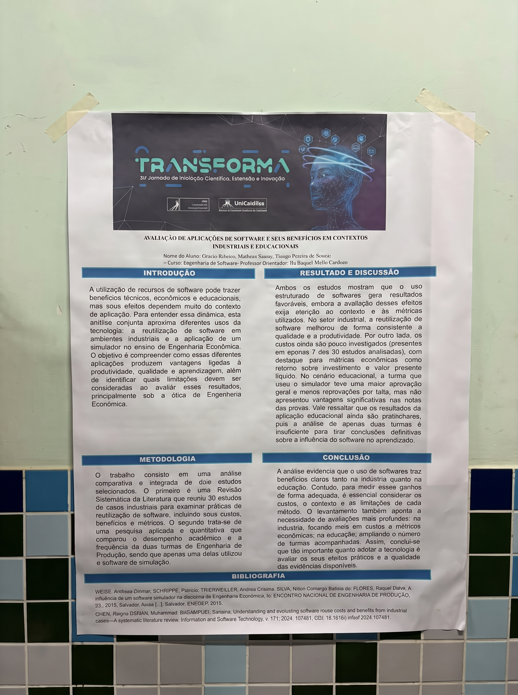
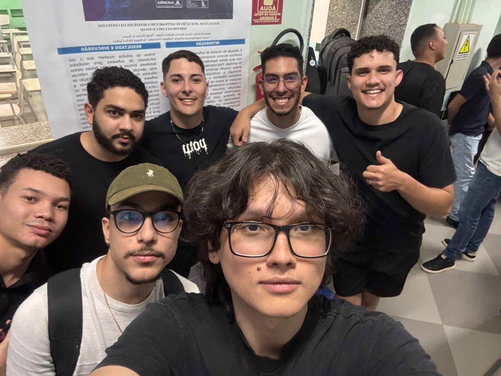
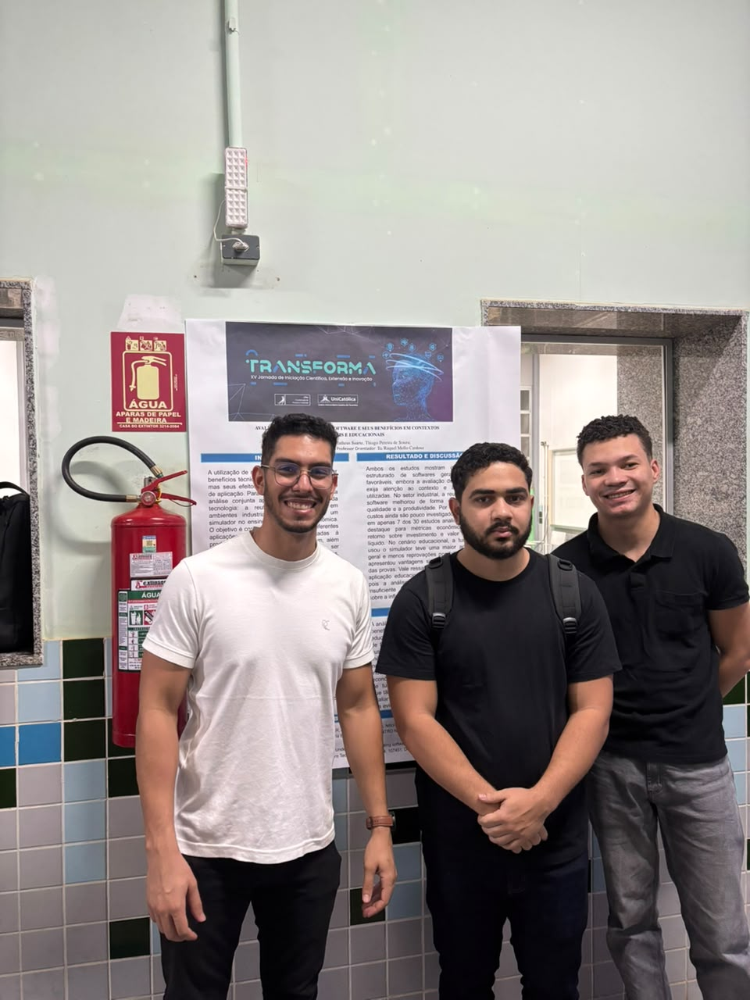
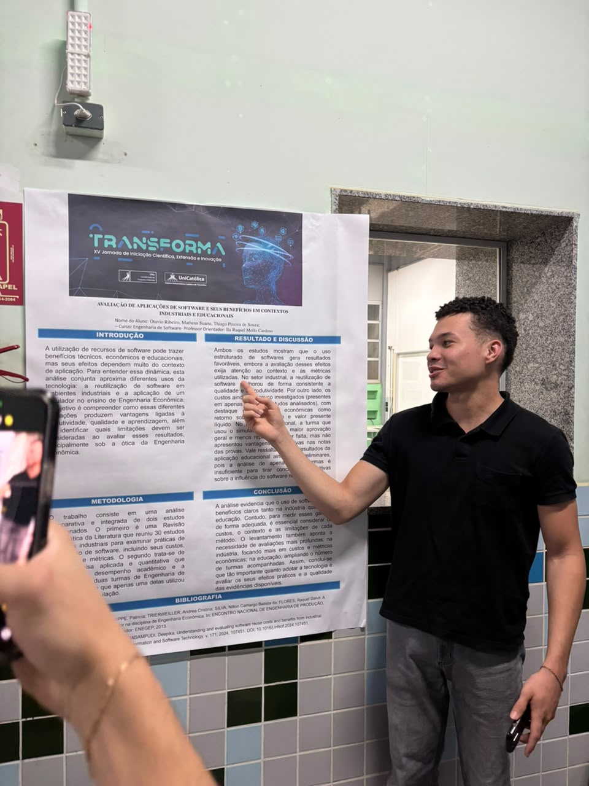
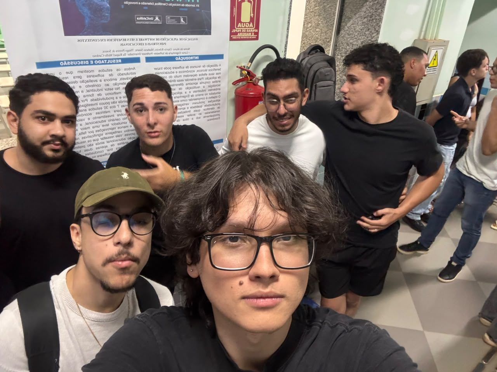

Por: Arthur da Rosa Lacerda e Jefferson Carneiro | Data: 07 de Outubro de 2026

Objetivo do projeto
O objetivo principal da pesquisa é compreender como o uso de softwares gera vantagens ligadas à produtividade, qualidade e aprendizagem. Ao invés de focar em um único nicho, a equipe aproximou diferentes usos da tecnologia (ambientes industriais e educacionais) para identificar quais limitações devem ser consideradas ao avaliar os resultados reais da implementação, utilizando fortemente as métricas da Engenharia Econômica.
O problema a ser resolvido
Muitas empresas e instituições de ensino adotam tecnologias acreditando que os benefícios são automáticos. O problema é que a eficácia da tecnologia depende criticamente do contexto. A falta de avaliações profundas — como a ausência de análise de custos na indústria ou a falta de amostras de alunos suficientes na educação — gera uma ilusão de eficiência, ocultando se o investimento na tecnologia realmente valeu a pena financeiramente e pedagogicamente.
Área de atuação e Público-alvo
Área de atuação: Engenharia de Software aplicada, atuando de forma interdisciplinar com a Gestão Industrial e as Metodologias de Ensino Superior.
Público-alvo: Gestores e líderes técnicos na indústria de tecnologia (que precisam decidir sobre reutilização de código), bem como coordenadores pedagógicos e professores universitários (que buscam adotar simuladores para engajar alunos).
Partes Interessadas (Stakeholders)
As partes interessadas envolvem as fábricas de software e empresas industriais (buscando maximizar a qualidade e reduzir o tempo de desenvolvimento), universidades (buscando reduzir a evasão e melhorar a aprovação geral) e os próprios estudantes de engenharia, que se beneficiam diretamente de metodologias de aprendizagem baseadas em simuladores práticos.
Estado do mercado e Concorrentes
Ao avaliar metodologias, os "concorrentes" no mercado atual refletem as escolhas metodológicas que gestores e professores possuem à disposição:
- Desenvolvimento Tradicional (Sem reúso): Abordagem padrão na indústria que, segundo o estudo, perde em produtividade e qualidade quando comparada aos modernos modelos de Reutilização de Software (onde partes do sistema são reaproveitadas).
- Simuladores Educacionais Industriais (Ex: FlexSim / Arena): Softwares de mercado usados para substituir aulas puramente teóricas na Engenharia de Produção e Engenharia Econômica, concorrendo diretamente com o ensino tradicional no quadro branco.
Diferencial e Tecnologias
Diferencial: O grande diferencial da pesquisa é a sua visão crítica e cética. O estudo prova que, na indústria, o reúso de software melhora a qualidade, mas alerta que apenas 7 de 30 estudos industriais se importaram em medir os custos. O trabalho clama pelo uso de métricas econômicas vitais, como o VPL (Valor Presente Líquido) e o ROI (Retorno Sobre o Investimento).
Resultados apresentados: Na educação, a tecnologia resultou em maior aprovação geral e menor reprovação por falta, embora ainda não tenha mostrado um salto significativo nas notas das provas, evidenciando que a adoção de simuladores retém o aluno, mas exige mais estudos de longo prazo.
Análise crítica da nossa equipe
Consideramos a abordagem desta pesquisa muito transparente. O ponto forte foi a honestidade científica da equipe: eles admitiram que as notas da turma que usou o simulador não foram drasticamente superiores, evitando criar uma propaganda irreal sobre o software. O alerta de que as empresas criam softwares sem olhar para o custo de manutenção também é cirúrgico. Como sugestão para estudos futuros, a equipe poderia aplicar esses simuladores em turmas de Engenharia de Software da própria UniCatólica, cruzando as notas para obter um banco de dados maior e tirar as conclusões definitivas que o projeto apontou que faltam.
Equipe e Autorização
Integrantes do projeto analisado: Otavio Ribeiro, Matheus Suarte e Thiago Pereira de Souza. Professora Orientadora: Ila Raquel Mello Cardoso (Curso de Engenharia de Software).
As informações e fotografias foram publicadas mediante o consentimento da equipe autora, em conformidade com as diretrizes do evento.
Galeria de Fotos




